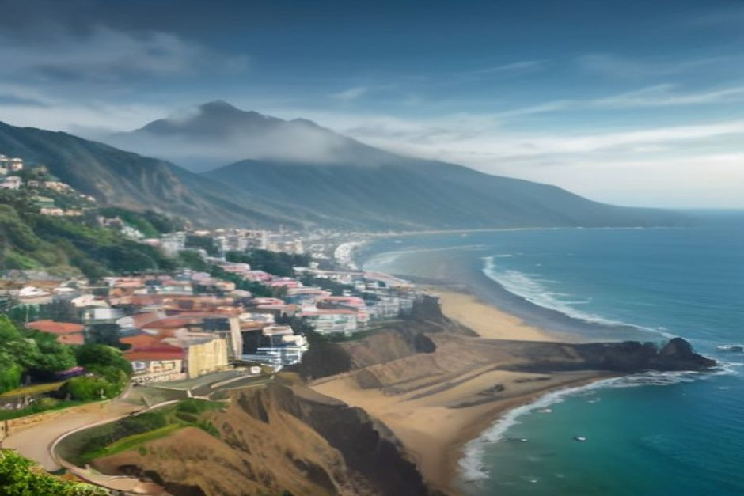

Madeira folgt demselben nationalen Kalender wie das portugiesische Festland, dazu kommen zwei Termine, die ausschließlich der Insel gehören — und keiner von ihnen sollte einen Besucher überraschen, der weiß, was wirklich geschlossen hat.
Welche Feiertage begeht Madeira im Jahr 2026?
Madeira begeht die 13 nationalen Feiertage Portugals. Im Jahr 2026 sind das: 1. Januar (Neujahr), 3. April (Karfreitag), 25. April (Tag der Freiheit), 1. Mai (Tag der Arbeit), 4. Juni (Fronleichnam), 10. Juni (Nationalfeiertag Portugals), 15. August (Mariä Himmelfahrt), 5. Oktober (Tag der Republik), 1. November (Allerheiligen), 1. Dezember (Wiederherstellung der Unabhängigkeit), 8. Dezember (Mariä Empfängnis) und 25. Dezember (Weihnachten). Da es sich um staatliche Feiertage handelt, schließen an jedem dieser Tage Banken, Behörden, Schulen und die meisten Geschäfte.

Welche Feiertage gibt es nur auf Madeira, nicht auf dem portugiesischen Festland?
Zwei: der Autonomietag von Madeira am 2. April, der an die Verfassung von 1976 erinnert, mit der der Archipel die politische Selbstverwaltung erhielt, und der Tag von Madeira (Dia da Região) am 1. Juli, der an die portugiesische Landung in Machico im Jahr 1419 erinnert. Beide sind regionale Feiertage, die inselweit begangen werden, und keiner von beiden gilt auf dem Festland oder auf den Azoren. Funchal hat außerdem mit dem Stadttag von Funchal am 21. August einen eigenen städtischen Feiertag, der speziell die Hauptstadt betrifft und nicht die gesamte Insel.
Was schließt an einem Feiertag auf Madeira tatsächlich?
Banken, Behörden, Postämter, die meisten Apotheken (außerhalb des Bereitschaftsdienstes) und viele inhabergeführte Geschäfte schließen für den Tag. Große Supermärkte haben oft nur verkürzte statt ganz geschlossene Öffnungszeiten, und der öffentliche Nahverkehr fährt in der Regel nach einem reduzierten Fahrplan wie an einem Sonntag. Wer Bargeld, einen Kurierdienst oder eine behördliche Angelegenheit braucht, sollte genau diesen einen Tag einplanen.
Haben Geschäfte und Restaurants in Funchal an Feiertagen geschlossen?
Nein — der Tourismus läuft weiter. Restaurants, Cafés, Hotels, der Mercado dos Lavradores und die Zona Velha behalten ihre gewohnten Öffnungszeiten, denn die Besucherwirtschaft der Insel legt an einem Feiertag keine Pause ein. Bootstouren, Taxis, Mietwagen und die wichtigsten Sehenswürdigkeiten laufen wie gewohnt weiter, sodass ein Feiertag am Reiseplan eines Besuchers so gut wie nichts ändert — wenn überhaupt, wirkt Funchal eher lebendiger, weil Einheimische unterwegs sind statt bei der Arbeit.
Welche Feiertage 2026 sorgen für ein langes Wochenende, das sich einzuplanen lohnt?
Portugal verschiebt einen Feiertag nicht auf den nächsten Werktag, wenn er auf einen Samstag oder Sonntag fällt — er geht dann einfach im Wochenende auf. Ein langes Wochenende entsteht dagegen, wenn ein Feiertag auf einen Dienstag oder Donnerstag fällt, denn dann nehmen sich viele Einheimische auch den angrenzenden Montag oder Freitag frei (eine Praxis, die als „ponte“, also Brücke, bekannt ist). 2026 liegt der Tag von Madeira am Mittwoch, den 1. Juli, nah am Wochenende, und der Tag der Republik am Montag, den 5. Oktober, verlängert das Wochenende bereits von selbst. Mariä Himmelfahrt am Samstag, den 15. August 2026, fällt auf ein Wochenende und bringt keinen zusätzlichen freien Tag.
Ist eine Bootstour an einem Feiertag eine gute Idee?
Ja — sogar eher noch besser als an einem gewöhnlichen Tag. Da Büros und viele Geschäfte geschlossen sind, erlebt die Küstenstraße und erleben Funchals Aussichtspunkte mehr Verkehr von Einheimischen, während das Wasser genauso ruhig und wenig überlaufen bleibt wie an jedem anderen Morgen. Besonders der Tag von Madeira lohnt sich als Anlass für einen Ausflug: Funchals Bucht füllt sich nach Einbruch der Dunkelheit mit Feuerwerk und kostenlosen Konzerten, während die Tagesstunden frei für die Küste bleiben. Eine private Bootstour mit Chifbay findet an Feiertagen genauso statt wie an jedem anderen Tag — Câmara de Lobos, Cabo Girão und ein Badestopp bei Fajã dos Padres beim Day Trip, oder die Küste zur goldenen Stunde beim Sunset Trip.
Und Karneval — ist das ein Feiertag?
Der Karnevalsdienstag (17. Februar 2026) ist kein gesetzlich vorgeschriebener nationaler Feiertag, aber Madeira behandelt ihn traditionell wie einen. Schulen schließen, viele Büros geben den Tag frei, und Funchal veranstaltet an diesem Nachmittag und Abend seinen großen Umzug entlang der Avenida do Mar. Auch der Rosenmontag schließt manchmal schon früher, wer also Mitte Februar zu Besuch ist, sollte lieber vorab die Öffnungszeiten eines Betriebs prüfen, statt einfach von geöffnet auszugehen.
Keiner von Madeiras Feiertagen ist ein Grund, einen Termin zu meiden — die meisten sind eher ein Grund, diesen Abend in Funchal zu verbringen statt anderswo, wo es ruhiger ist.
Kurz gesagt: Wer eine Bank oder eine Behörde braucht, sollte den Kalender im Blick behalten — wer wegen der Küste, dem Essen oder dem Meer hier ist, kann ihn getrost ignorieren. Die touristische Seite der Insel legt einfach keine Pause ein.